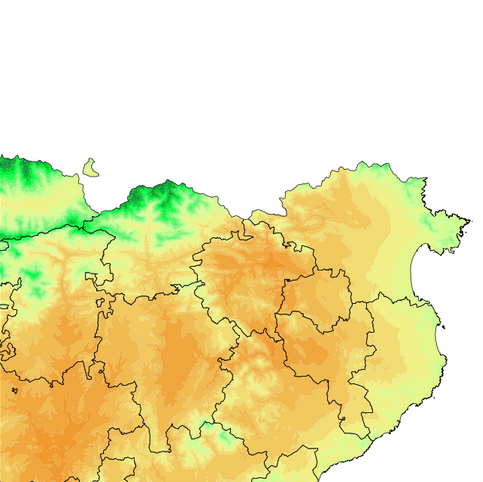
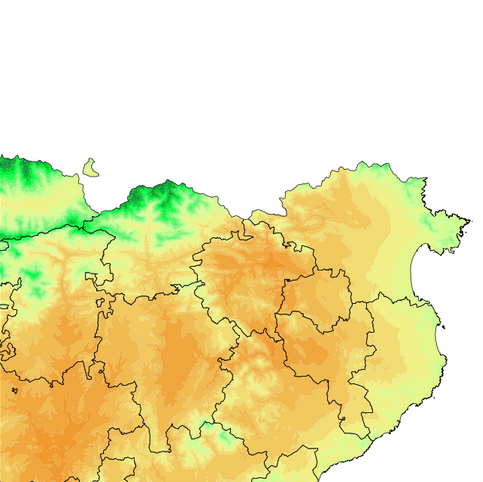

Viamet: Advanced integration of meteorological data to achieve high resolution winter road condition forecasts
Road status forecasting along 500km of mountain roads
- Better Snowplow routes & efficiency
- Reduction in the use of salt
- Road security improvement
- Objective justification for the taken actions
 
